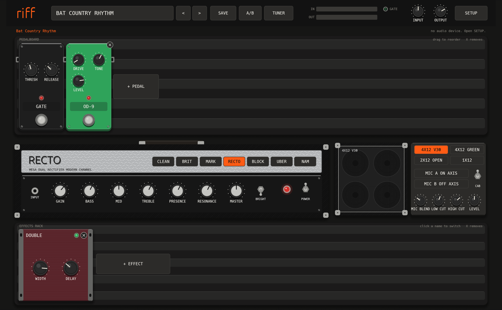
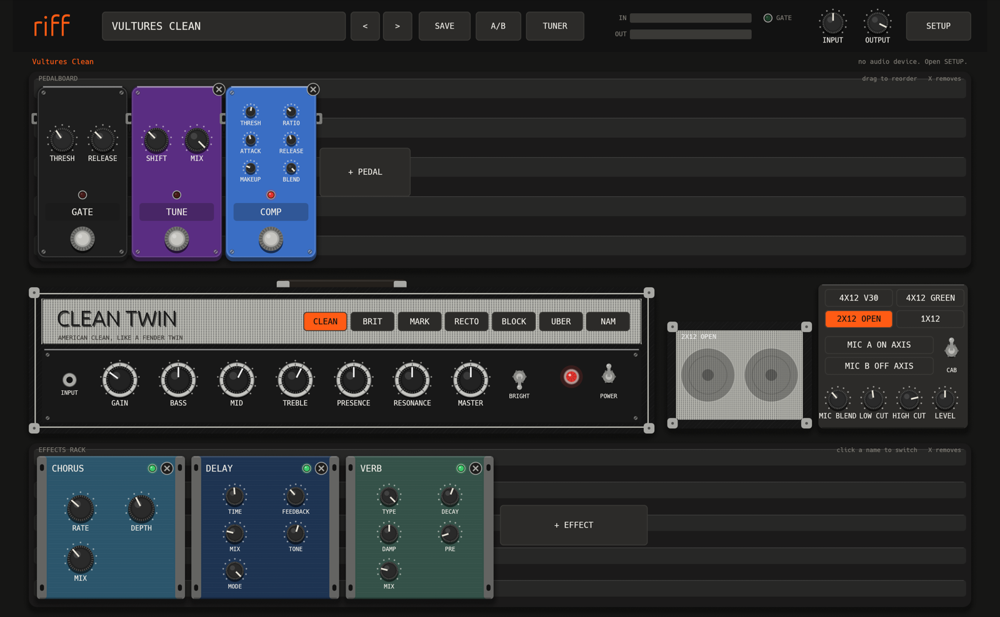

riff
metal amp simPlug in your guitar, pick a song, play. riff runs your guitar through pedals, an amp and a speaker cabinet, in real time, on your Mac.

CLEAN TWIN, BRIT 800, MARK IIC, RECTO, BLOCK 51 and UBER. Each amp has 8x oversampling, tube stages that react to your picking, power amp sag and a speaker load.
4x12 V30, 4x12 Greenback, 2x12 open back and 1x12. Blend an on-axis and an off-axis mic, or load your own IR files.
Gate, boost, OD-9, RODENT, SWEDISH, wah, EQ, octave, drop tune, acoustic, chorus, phaser, flanger, delay, reverb, doubler, harmony and tremolo.
Sorted by band, album and song: Metallica, Dream Theater, Death, Avenged Sevenfold, Arch Enemy, metalcore and more.
Load a Neural Amp Modeler capture (.nam) into the amp slot, for example a free capture from ToneHunt.
Use the standalone app with any audio interface, or load the VST3 or CLAP plugin in Reaper, Ableton Live, Bitwig or Studio One.

Start in 5 steps
- Install Rust from rustup.rs.
- Get the source:
git clone https://github.com/rodbove/riff. - In the
rifffolder, run./scripts/install.sh. - Open riff from Applications. Allow microphone access.
- Click SETUP, select your audio interface and the input of your guitar.
The tutorial has the full setup, a tour of the screen, tone recipes and a list of all presets.